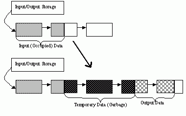
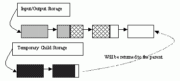

Dynamic Structures¶
The section describes OpenCV 1.x API for creating growable sequences and other dynamic data structures allocated in CvMemStorage. If you use the new C++, Python, Java etc interface, you will unlikely need this functionality. Use std::vector or other high-level data structures.
CvMemStorage¶
-
struct
CvMemStorage¶ A storage for various OpenCV dynamic data structures, such as
CvSeq,CvSetetc.-
CvMemBlock*
bottom¶ the first memory block in the double-linked list of blocks
-
CvMemBlock*
top¶ the current partially allocated memory block in the list of blocks
-
CvMemStorage*
parent¶ the parent storage (if any) from which the new memory blocks are borrowed.
-
int
free_space¶ number of free bytes in the
topblock
-
int
block_size¶ the total size of the memory blocks
-
CvMemBlock*
Memory storage is a low-level structure used to store dynamically growing data structures such as sequences, contours, graphs, subdivisions, etc. It is organized as a list of memory blocks of equal size -
bottom field is the beginning of the list of blocks and top is the currently used block, but not necessarily the last block of the list. All blocks between bottom and top, not including the
latter, are considered fully occupied; all blocks between top and the last block, not including top, are considered free and top itself is partly occupied - free_space contains the number of free bytes left in the end of top.
A new memory buffer that may be allocated explicitly by MemStorageAlloc() function or implicitly by higher-level functions, such as SeqPush(), GraphAddEdge() etc.
The buffer is put in the end of already allocated space in the top memory block, if there is enough free space. After allocation, free_space is decreased by the size of the allocated buffer plus some padding to keep the proper alignment. When the allocated buffer does not fit into the available portion of
top, the next storage block from the list is taken as top and free_space is reset to the whole block size prior to the allocation.
If there are no more free blocks, a new block is allocated (or borrowed from the parent, see CreateChildMemStorage()) and added to the end of list. Thus, the storage behaves as a stack with bottom indicating bottom of the stack and the pair (top, free_space)
indicating top of the stack. The stack top may be saved via SaveMemStoragePos(), restored via
RestoreMemStoragePos(), or reset via ClearMemStorage().
CvMemBlock¶
-
struct
CvMemBlock¶
The structure CvMemBlock represents a single block of memory storage. The actual data in the memory blocks follows the header.
CvMemStoragePos¶
-
struct
CvMemStoragePos¶
The structure stores the position in the memory storage. It is used by SaveMemStoragePos() and RestoreMemStoragePos().
CvSeq¶
-
struct
CvSeq¶ Dynamically growing sequence.
-
int
flags¶ sequence flags, including the sequence signature (CV_SEQ_MAGIC_VAL or CV_SET_MAGIC_VAL), type of the elements and some other information about the sequence.
-
int
header_size¶ size of the sequence header. It should be sizeof(CvSeq) at minimum. See
CreateSeq().
-
CvSeq*
h_prev¶
-
CvSeq*
h_next¶
-
CvSeq*
v_prev¶
-
CvSeq*
v_next¶ pointers to another sequences in a sequence tree. Sequence trees are used to store hierarchical contour structures, retrieved by
FindContours()
-
int
total¶ the number of sequence elements
-
int
elem_size¶ size of each sequence element in bytes
-
CvMemStorage*
storage¶ memory storage where the sequence resides. It can be a NULL pointer.
-
CvSeqBlock*
first¶ pointer to the first data block
-
int
The structure CvSeq is a base for all of OpenCV dynamic data structures.
There are two types of sequences - dense and sparse. The base type for dense
sequences is CvSeq and such sequences are used to represent
growable 1d arrays - vectors, stacks, queues, and deques. They have no gaps
in the middle - if an element is removed from the middle or inserted
into the middle of the sequence, the elements from the closer end are
shifted. Sparse sequences have CvSet as a base class and they are
discussed later in more detail. They are sequences of nodes; each may be either occupied or free as indicated by the node flag. Such sequences are used for unordered data structures such as sets of elements, graphs, hash tables and so forth.
CvSlice¶
-
struct
CvSlice¶ A sequence slice. In C++ interface the class
Rangeshould be used instead.-
int
start_index¶ inclusive start index of the sequence slice
-
int
end_index¶ exclusive end index of the sequence slice
-
int
There are helper functions to construct the slice and to compute its length:
-
C:
cvSlice(int start, int end)¶ Parameters: - start – Inclusive left boundary.
- end – Exclusive right boundary.
#define CV_WHOLE_SEQ_END_INDEX 0x3fffffff
#define CV_WHOLE_SEQ cvSlice(0, CV_WHOLE_SEQ_END_INDEX)
-
C:
cvSliceLength(CvSlice slice, const CvSeq* seq)¶ Parameters: - slice – The slice of sequence.
- seq – Source sequence.
Calculates the sequence slice length.
Some of functions that operate on sequences take a CvSlice slice parameter that is often set to the whole sequence (CV_WHOLE_SEQ) by default. Either of the start_index and end_index may be negative or exceed the sequence length. If they are equal, the slice is considered empty (i.e., contains no elements). Because sequences are treated as circular structures, the slice may select a
few elements in the end of a sequence followed by a few elements at the beginning of the sequence. For example, cvSlice(-2, 3) in the case of a 10-element sequence will select a 5-element slice, containing the pre-last (8th), last (9th), the very first (0th), second (1th) and third (2nd)
elements. The functions normalize the slice argument in the following way:
SliceLength()is called to determine the length of the slice,start_indexof the slice is normalized similarly to the argument ofGetSeqElem()(i.e., negative indices are allowed). The actual slice to process starts at the normalizedstart_indexand lastsSliceLength()elements (again, assuming the sequence is a circular structure).
If a function does not accept a slice argument, but you want to process only a part of the sequence, the sub-sequence may be extracted using the SeqSlice() function, or stored into a continuous
buffer with CvtSeqToArray() (optionally, followed by MakeSeqHeaderForArray()).
CvSet¶
-
struct
CvSet¶
The structure CvSet is a base for OpenCV 1.x sparse data structures. It is derived from CvSeq and includes an additional member free_elems - a list of free nodes. Every node of the set, whether free or not, is an element of the underlying sequence. While there are no restrictions on elements of dense sequences, the set (and derived structures) elements must start with an integer field and be able to fit CvSetElem structure, because these two fields (an integer followed by a pointer) are required for the organization of a node set with the list of free nodes. If a node is free, the flags
field is negative (the most-significant bit, or MSB, of the field is set), and the next_free points to the next free node (the first free node is referenced by the free_elems field of CvSet). And if a node is occupied, the flags field is positive and contains the node index that may be retrieved using the (set_elem->flags & CV_SET_ELEM_IDX_MASK) expressions, the rest of the node content is determined by the user. In particular, the occupied nodes are not linked as the free nodes are, so the second field can be used for such a link as well as for some different purpose. The macro CV_IS_SET_ELEM(set_elem_ptr) can be used to determined whether the specified node is occupied or not.
Initially the set and the free node list are empty. When a new node is requested from the set, it is taken from the list of free nodes, which is then updated. If the list appears to be empty, a new sequence block is allocated and all the nodes within the block are joined in the list of free nodes. Thus, the total
field of the set is the total number of nodes both occupied and free. When an occupied node is released, it is added to the list of free nodes. The node released last will be occupied first.
CvSet is used to represent graphs (CvGraph), sparse multi-dimensional arrays (CvSparseMat), and planar subdivisions (CvSubdiv2D).
CvSetElem¶
-
struct
CvSetElem¶
The structure is represent single element of CvSet. It consists of two fields: element data pointer and flags.
CvGraph¶
-
struct
CvGraph¶
The structure CvGraph is a base for graphs used in OpenCV 1.x. It inherits from
CvSet, that is, it is considered as a set of vertices. Besides, it contains another set as a member, a set of graph edges. Graphs in OpenCV are represented using adjacency lists format.
CvGraphVtx¶
-
struct
CvGraphVtx¶
The structure represents single vertex in CvGraph. It consists of two filds: pointer to first edge and flags.
CvGraphEdge¶
-
struct
CvGraphEdge¶
The structure represents edge in CvGraph. Each edge consists of:
- Two pointers to the starting and ending vertices (vtx[0] and vtx[1] respectively);
- Two pointers to next edges for the starting and ending vertices, where next[0] points to the next edge in the vtx[0] adjacency list and next[1] points to the next edge in the vtx[1] adjacency list;
- Weight;
- Flags.
CvGraphScanner¶
-
struct
CvGraphScanner¶
The structure CvGraphScanner is used for depth-first graph traversal. See discussion of the functions below.
CvTreeNodeIterator¶
-
struct
CvTreeNodeIterator¶
The structure CvTreeNodeIterator is used to traverse trees of sequences.
ClearGraph¶
Clears a graph.
-
C:
cvClearGraph(CvGraph* graph)¶ Parameters: - graph – Graph
The function removes all vertices and edges from a graph. The function has O(1) time complexity.
ClearMemStorage¶
Clears memory storage.
-
C:
cvClearMemStorage(CvMemStorage* storage)¶ Parameters: - storage – Memory storage
The function resets the top (free space boundary) of the storage to the very beginning. This function does not deallocate any memory. If the storage has a parent, the function returns all blocks to the parent.
ClearSeq¶
Clears a sequence.
-
C:
cvClearSeq(CvSeq* seq)¶ Parameters: - seq – Sequence
The function removes all elements from a sequence. The function does not return the memory to the storage block, but this memory is reused later when new elements are added to the sequence. The function has ‘O(1)’ time complexity.
Note
It is impossible to deallocate a sequence, i.e. free space in the memory storage occupied by the sequence. Instead, call ClearMemStorage() or ReleaseMemStorage() from time to time somewhere in a top-level processing loop.
ClearSet¶
Clears a set.
-
C:
cvClearSet(CvSet* set_header)¶ Parameters: - set_header – Cleared set
The function removes all elements from set. It has O(1) time complexity.
CloneGraph¶
Clones a graph.
-
C:
cvCloneGraph(const CvGraph* graph, CvMemStorage* storage)¶ Parameters: - graph – The graph to copy
- storage – Container for the copy
The function creates a full copy of the specified graph. If the graph vertices or edges have pointers to some external data, it can still be shared between the copies. The vertex and edge indices in the new graph may be different from the original because the function defragments the vertex and edge sets.
CloneSeq¶
Creates a copy of a sequence.
-
C:
cvCloneSeq(const CvSeq* seq, CvMemStorage* storage=NULL )¶
-
Python:
cv.CloneSeq(seq, storage) → None¶ Parameters: - seq – Sequence
- storage – The destination storage block to hold the new sequence header and the copied data, if any. If it is NULL, the function uses the storage block containing the input sequence.
The function makes a complete copy of the input sequence and returns it.
The call cvCloneSeq( seq, storage ) is equivalent to cvSeqSlice( seq, CV_WHOLE_SEQ, storage, 1 ).
CreateChildMemStorage¶
Creates child memory storage.
-
C:
cvCreateChildMemStorage(CvMemStorage* parent)¶ Parameters: - parent – Parent memory storage
The function creates a child memory storage that is similar to simple memory storage except for the differences in the memory allocation/deallocation mechanism. When a child storage needs a new block to add to the block list, it tries to get this block from the parent. The first unoccupied parent block available is taken and excluded from the parent block list. If no blocks are available, the parent either allocates a block or borrows one from its own parent, if any. In other words, the chain, or a more complex structure, of memory storages where every storage is a child/parent of another is possible. When a child storage is released or even cleared, it returns all blocks to the parent. In other aspects, child storage is the same as simple storage.
Child storage is useful in the following situation. Imagine that the user needs to process dynamic data residing in a given storage area and put the result back to that same storage area. With the simplest approach, when temporary data is resided in the same storage area as the input and output data, the storage area will look as follows after processing:
Dynamic data processing without using child storage
That is, garbage appears in the middle of the storage. However, if one creates a child memory storage at the beginning of processing, writes temporary data there, and releases the child storage at the end, no garbage will appear in the source/destination storage:
Dynamic data processing using a child storage
CreateGraph¶
Creates an empty graph.
-
C:
cvCreateGraph(int graph_flags, int header_size, int vtx_size, int edge_size, CvMemStorage* storage)¶ Parameters: - graph_flags – Type of the created graph. Usually, it is either
CV_SEQ_KIND_GRAPHfor generic unoriented graphs andCV_SEQ_KIND_GRAPH | CV_GRAPH_FLAG_ORIENTEDfor generic oriented graphs. - header_size – Graph header size; may not be less than
sizeof(CvGraph) - vtx_size – Graph vertex size; the custom vertex structure must start with
CvGraphVtx(useCV_GRAPH_VERTEX_FIELDS()) - edge_size – Graph edge size; the custom edge structure must start with
CvGraphEdge(useCV_GRAPH_EDGE_FIELDS()) - storage – The graph container
- graph_flags – Type of the created graph. Usually, it is either
The function creates an empty graph and returns a pointer to it.
CreateGraphScanner¶
Creates structure for depth-first graph traversal.
-
C:
cvCreateGraphScanner(CvGraph* graph, CvGraphVtx* vtx=NULL, int mask=CV_GRAPH_ALL_ITEMS )¶ Parameters: - graph – Graph
- vtx – Initial vertex to start from. If NULL, the traversal starts from the first vertex (a vertex with the minimal index in the sequence of vertices).
- mask –
Event mask indicating which events are of interest to the user (where
NextGraphItem()function returns control to the user) It can beCV_GRAPH_ALL_ITEMS(all events are of interest) or a combination of the following flags:- CV_GRAPH_VERTEX stop at the graph vertices visited for the first time
- CV_GRAPH_TREE_EDGE stop at tree edges (
tree edgeis the edge connecting the last visited vertex and the vertex to be visited next) - CV_GRAPH_BACK_EDGE stop at back edges (
back edgeis an edge connecting the last visited vertex with some of its ancestors in the search tree) - CV_GRAPH_FORWARD_EDGE stop at forward edges (
forward edgeis an edge connecting the last visited vertex with some of its descendants in the search tree. The forward edges are only possible during oriented graph traversal) - CV_GRAPH_CROSS_EDGE stop at cross edges (
cross edgeis an edge connecting different search trees or branches of the same tree. Thecross edgesare only possible during oriented graph traversal) - CV_GRAPH_ANY_EDGE stop at any edge (
tree, back, forward, andcross edges) - CV_GRAPH_NEW_TREE stop in the beginning of every new search tree. When the traversal procedure visits all vertices and edges reachable from the initial vertex (the visited vertices together with tree edges make up a tree), it searches for some unvisited vertex in the graph and resumes the traversal process from that vertex. Before starting a new tree (including the very first tree when
cvNextGraphItemis called for the first time) it generates aCV_GRAPH_NEW_TREEevent. For unoriented graphs, each search tree corresponds to a connected component of the graph. - CV_GRAPH_BACKTRACKING stop at every already visited vertex during backtracking - returning to already visited vertexes of the traversal tree.
The function creates a structure for depth-first graph traversal/search. The initialized structure is used in the
NextGraphItem()
function - the incremental traversal procedure.
CreateMemStorage¶
Creates memory storage.
-
C:
cvCreateMemStorage(int block_size=0 )¶
-
Python:
cv.CreateMemStorage(blockSize=0) → memstorage¶ Parameters: block_size – Size of the storage blocks in bytes. If it is 0, the block size is set to a default value - currently it is about 64K.
The function creates an empty memory storage. See
CvMemStorage
description.
CreateSeq¶
Creates a sequence.
-
C:
cvCreateSeq(int seq_flags, size_t header_size, size_t elem_size, CvMemStorage* storage)¶ Parameters: - seq_flags – Flags of the created sequence. If the sequence is not passed to any function working with a specific type of sequences, the sequence value may be set to 0, otherwise the appropriate type must be selected from the list of predefined sequence types.
- header_size – Size of the sequence header; must be greater than or equal to
sizeof(CvSeq). If a specific type or its extension is indicated, this type must fit the base type header. - elem_size – Size of the sequence elements in bytes. The size must be consistent with the sequence type. For example, for a sequence of points to be created, the element type
CV_SEQ_ELTYPE_POINTshould be specified and the parameterelem_sizemust be equal tosizeof(CvPoint). - storage – Sequence location
The function creates a sequence and returns
the pointer to it. The function allocates the sequence header in
the storage block as one continuous chunk and sets the structure
fields
flags
,
elemSize
,
headerSize
, and
storage
to passed values, sets
delta_elems
to the
default value (that may be reassigned using the
SetSeqBlockSize()
function), and clears other header fields, including the space following
the first
sizeof(CvSeq)
bytes.
CreateSet¶
Creates an empty set.
-
C:
cvCreateSet(int set_flags, int header_size, int elem_size, CvMemStorage* storage)¶ Parameters: - set_flags – Type of the created set
- header_size – Set header size; may not be less than
sizeof(CvSet) - elem_size – Set element size; may not be less than
CvSetElem - storage – Container for the set
The function creates an empty set with a specified header size and element size, and returns the pointer to the set. This function is just a thin layer on top of
CreateSeq().
CvtSeqToArray¶
Copies a sequence to one continuous block of memory.
-
C:
cvCvtSeqToArray(const CvSeq* seq, void* elements, CvSlice slice=CV_WHOLE_SEQ )¶ Parameters: - seq – Sequence
- elements – Pointer to the destination array that must be large enough. It should be a pointer to data, not a matrix header.
- slice – The sequence portion to copy to the array
The function copies the entire sequence or subsequence to the specified buffer and returns the pointer to the buffer.
EndWriteSeq¶
Finishes the process of writing a sequence.
-
C:
cvEndWriteSeq(CvSeqWriter* writer)¶ Parameters: - writer – Writer state
The function finishes the writing process and
returns the pointer to the written sequence. The function also truncates
the last incomplete sequence block to return the remaining part of the
block to memory storage. After that, the sequence can be read and
modified safely. See
StartWriteSeq()
and
StartAppendToSeq()
FindGraphEdge¶
Finds an edge in a graph.
-
C:
cvFindGraphEdge(const CvGraph* graph, int start_idx, int end_idx)¶ Parameters: - graph – Graph
- start_idx – Index of the starting vertex of the edge
- end_idx – Index of the ending vertex of the edge. For an unoriented graph, the order of the vertex parameters does not matter.
#define cvGraphFindEdge cvFindGraphEdge
The function finds the graph edge connecting two specified vertices and returns a pointer to it or NULL if the edge does not exist.
FindGraphEdgeByPtr¶
Finds an edge in a graph by using its pointer.
-
C:
cvFindGraphEdgeByPtr(const CvGraph* graph, const CvGraphVtx* start_vtx, const CvGraphVtx* end_vtx)¶ Parameters: - graph – Graph
- start_vtx – Pointer to the starting vertex of the edge
- end_vtx – Pointer to the ending vertex of the edge. For an unoriented graph, the order of the vertex parameters does not matter.
#define cvGraphFindEdgeByPtr cvFindGraphEdgeByPtr
The function finds the graph edge connecting two specified vertices and returns pointer to it or NULL if the edge does not exists.
FlushSeqWriter¶
Updates sequence headers from the writer.
-
C:
cvFlushSeqWriter(CvSeqWriter* writer)¶ Parameters: - writer – Writer state
The function is intended to enable the user to
read sequence elements, whenever required, during the writing process,
e.g., in order to check specific conditions. The function updates the
sequence headers to make reading from the sequence possible. The writer
is not closed, however, so that the writing process can be continued at
any time. If an algorithm requires frequent flushes, consider using
SeqPush()
instead.
GetGraphVtx¶
Finds a graph vertex by using its index.
-
C:
cvGetGraphVtx(CvGraph* graph, int vtx_idx)¶ Parameters: - graph – Graph
- vtx_idx – Index of the vertex
The function finds the graph vertex by using its index and returns the pointer to it or NULL if the vertex does not belong to the graph.
GetSeqElem¶
Returns a pointer to a sequence element according to its index.
-
C:
cvGetSeqElem(const CvSeq* seq, int index)¶ Parameters: - seq – Sequence
- index – Index of element
#define CV_GET_SEQ_ELEM( TYPE, seq, index ) (TYPE*)cvGetSeqElem( (CvSeq*)(seq), (index) )
The function finds the element with the given
index in the sequence and returns the pointer to it. If the element
is not found, the function returns 0. The function supports negative
indices, where -1 stands for the last sequence element, -2 stands for
the one before last, etc. If the sequence is most likely to consist of
a single sequence block or the desired element is likely to be located
in the first block, then the macro
CV_GET_SEQ_ELEM( elemType, seq, index )
should be used, where the parameter
elemType
is the
type of sequence elements (
CvPoint
for example), the parameter
seq
is a sequence, and the parameter
index
is the index
of the desired element. The macro checks first whether the desired element
belongs to the first block of the sequence and returns it if it does;
otherwise the macro calls the main function
GetSeqElem
. Negative
indices always cause the
GetSeqElem()
call. The function has O(1)
time complexity assuming that the number of blocks is much smaller than the
number of elements.
GetSeqReaderPos¶
Returns the current reader position.
-
C:
cvGetSeqReaderPos(CvSeqReader* reader)¶ Parameters: - reader – Reader state
The function returns the current reader position (within 0 ...
reader->seq->total
- 1).
GetSetElem¶
Finds a set element by its index.
-
C:
cvGetSetElem(const CvSet* set_header, int idx)¶ Parameters: - set_header – Set
- idx – Index of the set element within a sequence
The function finds a set element by its index. The function returns the pointer to it or 0 if the index is invalid or the corresponding node is free. The function supports negative indices as it uses
GetSeqElem()
to locate the node.
GraphAddEdge¶
Adds an edge to a graph.
-
C:
cvGraphAddEdge(CvGraph* graph, int start_idx, int end_idx, const CvGraphEdge* edge=NULL, CvGraphEdge** inserted_edge=NULL )¶ Parameters: - graph – Graph
- start_idx – Index of the starting vertex of the edge
- end_idx – Index of the ending vertex of the edge. For an unoriented graph, the order of the vertex parameters does not matter.
- edge – Optional input parameter, initialization data for the edge
- inserted_edge – Optional output parameter to contain the address of the inserted edge
The function connects two specified vertices. The function returns 1 if the edge has been added successfully, 0 if the edge connecting the two vertices exists already and -1 if either of the vertices was not found, the starting and the ending vertex are the same, or there is some other critical situation. In the latter case (i.e., when the result is negative), the function also reports an error by default.
GraphAddEdgeByPtr¶
Adds an edge to a graph by using its pointer.
-
C:
cvGraphAddEdgeByPtr(CvGraph* graph, CvGraphVtx* start_vtx, CvGraphVtx* end_vtx, const CvGraphEdge* edge=NULL, CvGraphEdge** inserted_edge=NULL )¶ Parameters: - graph – Graph
- start_vtx – Pointer to the starting vertex of the edge
- end_vtx – Pointer to the ending vertex of the edge. For an unoriented graph, the order of the vertex parameters does not matter.
- edge – Optional input parameter, initialization data for the edge
- inserted_edge – Optional output parameter to contain the address of the inserted edge within the edge set
The function connects two specified vertices. The function returns 1 if the edge has been added successfully, 0 if the edge connecting the two vertices exists already, and -1 if either of the vertices was not found, the starting and the ending vertex are the same or there is some other critical situation. In the latter case (i.e., when the result is negative), the function also reports an error by default.
GraphAddVtx¶
Adds a vertex to a graph.
-
C:
cvGraphAddVtx(CvGraph* graph, const CvGraphVtx* vtx=NULL, CvGraphVtx** inserted_vtx=NULL )¶ Parameters: - graph – Graph
- vtx – Optional input argument used to initialize the added vertex (only user-defined fields beyond
sizeof(CvGraphVtx)are copied) - inserted_vtx – Optional output argument. If not
NULL, the address of the new vertex is written here.
The function adds a vertex to the graph and returns the vertex index.
GraphEdgeIdx¶
Returns the index of a graph edge.
-
C:
cvGraphEdgeIdx(CvGraph* graph, CvGraphEdge* edge)¶ Parameters: - graph – Graph
- edge – Pointer to the graph edge
The function returns the index of a graph edge.
GraphRemoveEdge¶
Removes an edge from a graph.
-
C:
cvGraphRemoveEdge(CvGraph* graph, int start_idx, int end_idx)¶ Parameters: - graph – Graph
- start_idx – Index of the starting vertex of the edge
- end_idx – Index of the ending vertex of the edge. For an unoriented graph, the order of the vertex parameters does not matter.
The function removes the edge connecting two specified vertices. If the vertices are not connected [in that order], the function does nothing.
GraphRemoveEdgeByPtr¶
Removes an edge from a graph by using its pointer.
-
C:
cvGraphRemoveEdgeByPtr(CvGraph* graph, CvGraphVtx* start_vtx, CvGraphVtx* end_vtx)¶ Parameters: - graph – Graph
- start_vtx – Pointer to the starting vertex of the edge
- end_vtx – Pointer to the ending vertex of the edge. For an unoriented graph, the order of the vertex parameters does not matter.
The function removes the edge connecting two specified vertices. If the vertices are not connected [in that order], the function does nothing.
GraphRemoveVtx¶
Removes a vertex from a graph.
-
C:
cvGraphRemoveVtx(CvGraph* graph, int index)¶ Parameters: - graph – Graph
- index – Index of the removed vertex
The function removes a vertex from a graph together with all the edges incident to it. The function reports an error if the input vertex does not belong to the graph. The return value is the number of edges deleted, or -1 if the vertex does not belong to the graph.
GraphRemoveVtxByPtr¶
Removes a vertex from a graph by using its pointer.
-
C:
cvGraphRemoveVtxByPtr(CvGraph* graph, CvGraphVtx* vtx)¶ Parameters: - graph – Graph
- vtx – Pointer to the removed vertex
The function removes a vertex from the graph by using its pointer together with all the edges incident to it. The function reports an error if the vertex does not belong to the graph. The return value is the number of edges deleted, or -1 if the vertex does not belong to the graph.
GraphVtxDegree¶
Counts the number of edges incident to the vertex.
-
C:
cvGraphVtxDegree(const CvGraph* graph, int vtx_idx)¶ Parameters: - graph – Graph
- vtx_idx – Index of the graph vertex
The function returns the number of edges incident to the specified vertex, both incoming and outgoing. To count the edges, the following code is used:
CvGraphEdge* edge = vertex->first; int count = 0;
while( edge )
{
edge = CV_NEXT_GRAPH_EDGE( edge, vertex );
count++;
}
The macro
CV_NEXT_GRAPH_EDGE( edge, vertex )
returns the edge incident to
vertex
that follows after
edge
.
GraphVtxDegreeByPtr¶
Finds an edge in a graph.
-
C:
cvGraphVtxDegreeByPtr(const CvGraph* graph, const CvGraphVtx* vtx)¶ Parameters: - graph – Graph
- vtx – Pointer to the graph vertex
The function returns the number of edges incident to the specified vertex, both incoming and outcoming.
GraphVtxIdx¶
Returns the index of a graph vertex.
-
C:
cvGraphVtxIdx(CvGraph* graph, CvGraphVtx* vtx)¶ Parameters: - graph – Graph
- vtx – Pointer to the graph vertex
The function returns the index of a graph vertex.
InitTreeNodeIterator¶
Initializes the tree node iterator.
-
C:
cvInitTreeNodeIterator(CvTreeNodeIterator* tree_iterator, const void* first, int max_level)¶ Parameters: - tree_iterator – Tree iterator initialized by the function
- first – The initial node to start traversing from
- max_level – The maximal level of the tree (
firstnode assumed to be at the first level) to traverse up to. For example, 1 means that only nodes at the same level asfirstshould be visited, 2 means that the nodes on the same level asfirstand their direct children should be visited, and so forth.
The function initializes the tree iterator. The tree is traversed in depth-first order.
InsertNodeIntoTree¶
Adds a new node to a tree.
-
C:
cvInsertNodeIntoTree(void* node, void* parent, void* frame)¶ Parameters: - node – The inserted node
- parent – The parent node that is already in the tree
- frame – The top level node. If
parentandframeare the same, thev_prevfield ofnodeis set to NULL rather thanparent.
The function adds another node into tree. The function does not allocate any memory, it can only modify links of the tree nodes.
MakeSeqHeaderForArray¶
Constructs a sequence header for an array.
-
C:
cvMakeSeqHeaderForArray(int seq_type, int header_size, int elem_size, void* elements, int total, CvSeq* seq, CvSeqBlock* block)¶ Parameters: - seq_type – Type of the created sequence
- header_size – Size of the header of the sequence. Parameter sequence must point to the structure of that size or greater
- elem_size – Size of the sequence elements
- elements – Elements that will form a sequence
- total – Total number of elements in the sequence. The number of array elements must be equal to the value of this parameter.
- seq – Pointer to the local variable that is used as the sequence header
- block – Pointer to the local variable that is the header of the single sequence block
The function initializes a sequence header for an array. The sequence header as well as the sequence block are allocated by the user (for example, on stack). No data is copied by the function. The resultant sequence will consists of a single block and have NULL storage pointer; thus, it is possible to read its elements, but the attempts to add elements to the sequence will raise an error in most cases.
MemStorageAlloc¶
Allocates a memory buffer in a storage block.
-
C:
cvMemStorageAlloc(CvMemStorage* storage, size_t size)¶ Parameters: - storage – Memory storage
- size – Buffer size
The function allocates a memory buffer in
a storage block. The buffer size must not exceed the storage block size,
otherwise a runtime error is raised. The buffer address is aligned by
CV_STRUCT_ALIGN=sizeof(double)
(for the moment) bytes.
MemStorageAllocString¶
Allocates a text string in a storage block.
-
C:
cvMemStorageAllocString(CvMemStorage* storage, const char* ptr, int len=-1)¶ Parameters: - storage – Memory storage
- ptr – The string
- len – Length of the string (not counting the ending
NUL) . If the parameter is negative, the function computes the length.
typedef struct CvString
{
int len;
char* ptr;
}
CvString;
The function creates copy of the string in memory storage. It returns the structure that contains user-passed or computed length of the string and pointer to the copied string.
NextGraphItem¶
Executes one or more steps of the graph traversal procedure.
-
C:
cvNextGraphItem(CvGraphScanner* scanner)¶ Parameters: - scanner – Graph traversal state. It is updated by this function.
The function traverses through the graph
until an event of interest to the user (that is, an event, specified
in the
mask
in the
CreateGraphScanner()
call) is met or the
traversal is completed. In the first case, it returns one of the events
listed in the description of the
mask
parameter above and with
the next call it resumes the traversal. In the latter case, it returns
CV_GRAPH_OVER
(-1). When the event is
CV_GRAPH_VERTEX
,
CV_GRAPH_BACKTRACKING
, or
CV_GRAPH_NEW_TREE
,
the currently observed vertex is stored in
scanner-:math:`>`vtx
. And if the
event is edge-related, the edge itself is stored at
scanner-:math:`>`edge
,
the previously visited vertex - at
scanner-:math:`>`vtx
and the other ending
vertex of the edge - at
scanner-:math:`>`dst
.
NextTreeNode¶
Returns the currently observed node and moves the iterator toward the next node.
-
C:
cvNextTreeNode(CvTreeNodeIterator* tree_iterator)¶ Parameters: - tree_iterator – Tree iterator initialized by the function
The function returns the currently observed node and then updates the
iterator - moving it toward the next node. In other words, the function
behavior is similar to the
*p++
expression on a typical C
pointer or C++ collection iterator. The function returns NULL if there
are no more nodes.
PrevTreeNode¶
Returns the currently observed node and moves the iterator toward the previous node.
-
C:
cvPrevTreeNode(CvTreeNodeIterator* tree_iterator)¶ Parameters: - tree_iterator – Tree iterator initialized by the function
The function returns the currently observed node and then updates
the iterator - moving it toward the previous node. In other words,
the function behavior is similar to the
*p--
expression on a
typical C pointer or C++ collection iterator. The function returns NULL
if there are no more nodes.
ReleaseGraphScanner¶
Completes the graph traversal procedure.
-
C:
cvReleaseGraphScanner(CvGraphScanner** scanner)¶ Parameters: - scanner – Double pointer to graph traverser
The function completes the graph traversal procedure and releases the traverser state.
ReleaseMemStorage¶
Releases memory storage.
-
C:
cvReleaseMemStorage(CvMemStorage** storage)¶ Parameters: - storage – Pointer to the released storage
The function deallocates all storage memory blocks or returns them to the parent, if any. Then it deallocates the storage header and clears the pointer to the storage. All child storage associated with a given parent storage block must be released before the parent storage block is released.
RestoreMemStoragePos¶
Restores memory storage position.
-
C:
cvRestoreMemStoragePos(CvMemStorage* storage, CvMemStoragePos* pos)¶ Parameters: - storage – Memory storage
- pos – New storage top position
The function restores the position of the storage top from the parameter
pos
. This function and the function
cvClearMemStorage
are the only methods to release memory occupied in memory blocks. Note again that there is no way to free memory in the middle of an occupied portion of a storage block.
SaveMemStoragePos¶
Saves memory storage position.
-
C:
cvSaveMemStoragePos(const CvMemStorage* storage, CvMemStoragePos* pos)¶ Parameters: - storage – Memory storage
- pos – The output position of the storage top
The function saves the current position
of the storage top to the parameter
pos
. The function
cvRestoreMemStoragePos
can further retrieve this position.
SeqElemIdx¶
Returns the index of a specific sequence element.
-
C:
cvSeqElemIdx(const CvSeq* seq, const void* element, CvSeqBlock** block=NULL )¶ Parameters: - seq – Sequence
- element – Pointer to the element within the sequence
- block – Optional argument. If the pointer is not
NULL, the address of the sequence block that contains the element is stored in this location.
The function returns the index of a sequence element or a negative number if the element is not found.
SeqInsert¶
Inserts an element in the middle of a sequence.
-
C:
cvSeqInsert(CvSeq* seq, int before_index, const void* element=NULL )¶ Parameters: - seq – Sequence
- before_index – Index before which the element is inserted. Inserting before 0 (the minimal allowed value of the parameter) is equal to
SeqPushFront()and inserting beforeseq->total(the maximal allowed value of the parameter) is equal toSeqPush(). - element – Inserted element
The function shifts the sequence elements from the inserted position to the nearest end of the sequence and copies the
element
content there if the pointer is not NULL. The function returns a pointer to the inserted element.
SeqInsertSlice¶
Inserts an array in the middle of a sequence.
-
C:
cvSeqInsertSlice(CvSeq* seq, int before_index, const CvArr* from_arr)¶ Parameters: - seq – Sequence
- before_index – Index before which the array is inserted
- from_arr – The array to take elements from
The function inserts all
fromArr
array elements at the specified position of the sequence. The array
fromArr
can be a matrix or another sequence.
SeqInvert¶
Reverses the order of sequence elements.
-
C:
cvSeqInvert(CvSeq* seq)¶ Parameters: - seq – Sequence
The function reverses the sequence in-place - the first element becomes the last one, the last element becomes the first one and so forth.
SeqPop¶
Removes an element from the end of a sequence.
-
C:
cvSeqPop(CvSeq* seq, void* element=NULL )¶ Parameters: - seq – Sequence
- element – Optional parameter . If the pointer is not zero, the function copies the removed element to this location.
The function removes an element from a sequence. The function reports an error if the sequence is already empty. The function has O(1) complexity.
SeqPopFront¶
Removes an element from the beginning of a sequence.
-
C:
cvSeqPopFront(CvSeq* seq, void* element=NULL )¶ Parameters: - seq – Sequence
- element – Optional parameter. If the pointer is not zero, the function copies the removed element to this location.
The function removes an element from the beginning of a sequence. The function reports an error if the sequence is already empty. The function has O(1) complexity.
SeqPopMulti¶
Removes several elements from either end of a sequence.
-
C:
cvSeqPopMulti(CvSeq* seq, void* elements, int count, int in_front=0 )¶ Parameters: - seq – Sequence
- elements – Removed elements
- count – Number of elements to pop
- in_front –
The flags specifying which end of the modified sequence.
- CV_BACK the elements are added to the end of the sequence
- CV_FRONT the elements are added to the beginning of the sequence
The function removes several elements from either end of the sequence. If the number of the elements to be removed exceeds the total number of elements in the sequence, the function removes as many elements as possible.
SeqPush¶
Adds an element to the end of a sequence.
-
C:
cvSeqPush(CvSeq* seq, const void* element=NULL )¶ Parameters: - seq – Sequence
- element – Added element
The function adds an element to the end of a sequence and returns a pointer to the allocated element. If the input
element
is NULL, the function simply allocates a space for one more element.
The following code demonstrates how to create a new sequence using this function:
CvMemStorage* storage = cvCreateMemStorage(0);
CvSeq* seq = cvCreateSeq( CV_32SC1, /* sequence of integer elements */
sizeof(CvSeq), /* header size - no extra fields */
sizeof(int), /* element size */
storage /* the container storage */ );
int i;
for( i = 0; i < 100; i++ )
{
int* added = (int*)cvSeqPush( seq, &i );
printf( "
}
...
/* release memory storage in the end */
cvReleaseMemStorage( &storage );
The function has O(1) complexity, but there is a faster method for writing large sequences (see
StartWriteSeq()
and related functions).
SeqPushFront¶
Adds an element to the beginning of a sequence.
-
C:
cvSeqPushFront(CvSeq* seq, const void* element=NULL )¶ Parameters: - seq – Sequence
- element – Added element
The function is similar to
SeqPush()
but it adds the new element to the beginning of the sequence. The function has O(1) complexity.
SeqPushMulti¶
Pushes several elements to either end of a sequence.
-
C:
cvSeqPushMulti(CvSeq* seq, const void* elements, int count, int in_front=0 )¶ Parameters: - seq – Sequence
- elements – Added elements
- count – Number of elements to push
- in_front –
The flags specifying which end of the modified sequence.
- CV_BACK the elements are added to the end of the sequence
- CV_FRONT the elements are added to the beginning of the sequence
The function adds several elements to either end of a sequence. The elements are added to the sequence in the same order as they are arranged in the input array but they can fall into different sequence blocks.
SeqRemove¶
Removes an element from the middle of a sequence.
-
C:
cvSeqRemove(CvSeq* seq, int index)¶ Parameters: - seq – Sequence
- index – Index of removed element
The function removes elements with the given
index. If the index is out of range the function reports an error. An
attempt to remove an element from an empty sequence is a special
case of this situation. The function removes an element by shifting
the sequence elements between the nearest end of the sequence and the
index
-th position, not counting the latter.
SeqRemoveSlice¶
Removes a sequence slice.
-
C:
cvSeqRemoveSlice(CvSeq* seq, CvSlice slice)¶ Parameters: - seq – Sequence
- slice – The part of the sequence to remove
The function removes a slice from the sequence.
SeqSearch¶
Searches for an element in a sequence.
-
C:
cvSeqSearch(CvSeq* seq, const void* elem, CvCmpFunc func, int is_sorted, int* elem_idx, void* userdata=NULL )¶ Parameters: - seq – The sequence
- elem – The element to look for
- func – The comparison function that returns negative, zero or positive value depending on the relationships among the elements (see also
SeqSort()) - is_sorted – Whether the sequence is sorted or not
- elem_idx – Output parameter; index of the found element
- userdata – The user parameter passed to the comparison function; helps to avoid global variables in some cases
/* a < b ? -1 : a > b ? 1 : 0 */
typedef int (CV_CDECL* CvCmpFunc)(const void* a, const void* b, void* userdata);
The function searches for the element in the sequence. If
the sequence is sorted, a binary O(log(N)) search is used; otherwise, a
simple linear search is used. If the element is not found, the function
returns a NULL pointer and the index is set to the number of sequence
elements if a linear search is used, or to the smallest index
i, seq(i)>elem
.
SeqSlice¶
Makes a separate header for a sequence slice.
-
C:
cvSeqSlice(const CvSeq* seq, CvSlice slice, CvMemStorage* storage=NULL, int copy_data=0 )¶ Parameters: - seq – Sequence
- slice – The part of the sequence to be extracted
- storage – The destination storage block to hold the new sequence header and the copied data, if any. If it is NULL, the function uses the storage block containing the input sequence.
- copy_data – The flag that indicates whether to copy the elements of the extracted slice (
copy_data!=0) or not (copy_data=0)
The function creates a sequence that represents the specified slice of the input sequence. The new sequence either shares the elements with the original sequence or has its own copy of the elements. So if one needs to process a part of sequence but the processing function does not have a slice parameter, the required sub-sequence may be extracted using this function.
SeqSort¶
Sorts sequence element using the specified comparison function.
-
C:
cvSeqSort(CvSeq* seq, CvCmpFunc func, void* userdata=NULL )¶ Parameters: - seq – The sequence to sort
- func – The comparison function that returns a negative, zero, or positive value depending on the relationships among the elements (see the above declaration and the example below) - a similar function is used by
qsortfrom C runline except that in the latter,userdatais not used - userdata – The user parameter passed to the comparison function; helps to avoid global variables in some cases
/* a < b ? -1 : a > b ? 1 : 0 */
typedef int (CV_CDECL* CvCmpFunc)(const void* a, const void* b, void* userdata);
The function sorts the sequence in-place using the specified criteria. Below is an example of using this function:
/* Sort 2d points in top-to-bottom left-to-right order */
static int cmp_func( const void* _a, const void* _b, void* userdata )
{
CvPoint* a = (CvPoint*)_a;
CvPoint* b = (CvPoint*)_b;
int y_diff = a->y - b->y;
int x_diff = a->x - b->x;
return y_diff ? y_diff : x_diff;
}
...
CvMemStorage* storage = cvCreateMemStorage(0);
CvSeq* seq = cvCreateSeq( CV_32SC2, sizeof(CvSeq), sizeof(CvPoint), storage );
int i;
for( i = 0; i < 10; i++ )
{
CvPoint pt;
pt.x = rand()
pt.y = rand()
cvSeqPush( seq, &pt );
}
cvSeqSort( seq, cmp_func, 0 /* userdata is not used here */ );
/* print out the sorted sequence */
for( i = 0; i < seq->total; i++ )
{
CvPoint* pt = (CvPoint*)cvSeqElem( seq, i );
printf( "(
}
cvReleaseMemStorage( &storage );
SetAdd¶
Occupies a node in the set.
-
C:
cvSetAdd(CvSet* set_header, CvSetElem* elem=NULL, CvSetElem** inserted_elem=NULL )¶ Parameters: - set_header – Set
- elem – Optional input argument, an inserted element. If not NULL, the function copies the data to the allocated node (the MSB of the first integer field is cleared after copying).
- inserted_elem – Optional output argument; the pointer to the allocated cell
The function allocates a new node, optionally copies
input element data to it, and returns the pointer and the index to the
node. The index value is taken from the lower bits of the
flags
field of the node. The function has O(1) complexity; however, there exists
a faster function for allocating set nodes (see
SetNew()
).
SetNew¶
Adds an element to a set (fast variant).
-
C:
cvSetNew(CvSet* set_header)¶ Parameters: - set_header – Set
The function is an inline lightweight variant of
SetAdd()
. It occupies a new node and returns a pointer to it rather than an index.
SetRemove¶
Removes an element from a set.
-
C:
cvSetRemove(CvSet* set_header, int index)¶ Parameters: - set_header – Set
- index – Index of the removed element
The function removes an element with a specified
index from the set. If the node at the specified location is not occupied,
the function does nothing. The function has O(1) complexity; however,
SetRemoveByPtr()
provides a quicker way to remove a set element
if it is located already.
SetRemoveByPtr¶
Removes a set element based on its pointer.
-
C:
cvSetRemoveByPtr(CvSet* set_header, void* elem)¶ Parameters: - set_header – Set
- elem – Removed element
The function is an inline lightweight variant of
SetRemove()
that requires an element pointer. The function does not check whether the node is occupied or not - the user should take care of that.
SetSeqBlockSize¶
Sets up sequence block size.
-
C:
cvSetSeqBlockSize(CvSeq* seq, int delta_elems)¶ Parameters: - seq – Sequence
- delta_elems – Desirable sequence block size for elements
The function affects memory allocation
granularity. When the free space in the sequence buffers has run out,
the function allocates the space for
delta_elems
sequence
elements. If this block immediately follows the one previously allocated,
the two blocks are concatenated; otherwise, a new sequence block is
created. Therefore, the bigger the parameter is, the lower the possible
sequence fragmentation, but the more space in the storage block is wasted. When
the sequence is created, the parameter
delta_elems
is set to
the default value of about 1K. The function can be called any time after
the sequence is created and affects future allocations. The function
can modify the passed value of the parameter to meet memory storage
constraints.
SetSeqReaderPos¶
Moves the reader to the specified position.
-
C:
cvSetSeqReaderPos(CvSeqReader* reader, int index, int is_relative=0 )¶ Parameters: - reader – Reader state
- index – The destination position. If the positioning mode is used (see the next parameter), the actual position will be
indexmodreader->seq->total. - is_relative – If it is not zero, then
indexis a relative to the current position
The function moves the read position to an absolute position or relative to the current position.
StartAppendToSeq¶
Initializes the process of writing data to a sequence.
-
C:
cvStartAppendToSeq(CvSeq* seq, CvSeqWriter* writer)¶ Parameters: - seq – Pointer to the sequence
- writer – Writer state; initialized by the function
The function initializes the process of
writing data to a sequence. Written elements are added to the end of the
sequence by using the
CV_WRITE_SEQ_ELEM( written_elem, writer )
macro. Note
that during the writing process, other operations on the sequence may
yield an incorrect result or even corrupt the sequence (see description of
FlushSeqWriter()
, which helps to avoid some of these problems).
StartReadSeq¶
Initializes the process of sequential reading from a sequence.
-
C:
cvStartReadSeq(const CvSeq* seq, CvSeqReader* reader, int reverse=0 )¶ Parameters: - seq – Sequence
- reader – Reader state; initialized by the function
- reverse – Determines the direction of the sequence traversal. If
reverseis 0, the reader is positioned at the first sequence element; otherwise it is positioned at the last element.
The function initializes the reader state. After
that, all the sequence elements from the first one down to the last one
can be read by subsequent calls of the macro
CV_READ_SEQ_ELEM( read_elem, reader )
in the case of forward reading and by using
CV_REV_READ_SEQ_ELEM( read_elem, reader )
in the case of reverse
reading. Both macros put the sequence element to
read_elem
and
move the reading pointer toward the next element. A circular structure
of sequence blocks is used for the reading process, that is, after the
last element has been read by the macro
CV_READ_SEQ_ELEM
, the
first element is read when the macro is called again. The same applies to
CV_REV_READ_SEQ_ELEM
. There is no function to finish the reading
process, since it neither changes the sequence nor creates any temporary
buffers. The reader field
ptr
points to the current element of
the sequence that is to be read next. The code below demonstrates how
to use the sequence writer and reader.
CvMemStorage* storage = cvCreateMemStorage(0);
CvSeq* seq = cvCreateSeq( CV_32SC1, sizeof(CvSeq), sizeof(int), storage );
CvSeqWriter writer;
CvSeqReader reader;
int i;
cvStartAppendToSeq( seq, &writer );
for( i = 0; i < 10; i++ )
{
int val = rand()
CV_WRITE_SEQ_ELEM( val, writer );
printf("
}
cvEndWriteSeq( &writer );
cvStartReadSeq( seq, &reader, 0 );
for( i = 0; i < seq->total; i++ )
{
int val;
#if 1
CV_READ_SEQ_ELEM( val, reader );
printf("
#else /* alternative way, that is prefferable if sequence elements are large,
or their size/type is unknown at compile time */
printf("
CV_NEXT_SEQ_ELEM( seq->elem_size, reader );
#endif
}
...
cvReleaseStorage( &storage );
StartWriteSeq¶
Creates a new sequence and initializes a writer for it.
-
C:
cvStartWriteSeq(int seq_flags, int header_size, int elem_size, CvMemStorage* storage, CvSeqWriter* writer)¶ Parameters: - seq_flags – Flags of the created sequence. If the sequence is not passed to any function working with a specific type of sequences, the sequence value may be equal to 0; otherwise the appropriate type must be selected from the list of predefined sequence types.
- header_size – Size of the sequence header. The parameter value may not be less than
sizeof(CvSeq). If a certain type or extension is specified, it must fit within the base type header. - elem_size – Size of the sequence elements in bytes; must be consistent with the sequence type. For example, if a sequence of points is created (element type
CV_SEQ_ELTYPE_POINT), then the parameterelem_sizemust be equal tosizeof(CvPoint). - storage – Sequence location
- writer – Writer state; initialized by the function
The function is a combination of
CreateSeq()
and
StartAppendToSeq()
. The pointer to the
created sequence is stored at
writer->seq
and is also returned by the
EndWriteSeq()
function that should be called at the end.
TreeToNodeSeq¶
Gathers all node pointers to a single sequence.
-
C:
cvTreeToNodeSeq(const void* first, int header_size, CvMemStorage* storage)¶ Parameters: - first – The initial tree node
- header_size – Header size of the created sequence (sizeof(CvSeq) is the most frequently used value)
- storage – Container for the sequence
The function puts pointers of all nodes reachable from first into a single sequence. The pointers are written sequentially in the depth-first order.
Help and Feedback
You did not find what you were looking for?- Ask a question on the Q&A forum.
- If you think something is missing or wrong in the documentation, please file a bug report.

Table Of Contents
- Dynamic Structures
- CvMemStorage
- CvMemBlock
- CvMemStoragePos
- CvSeq
- CvSlice
- CvSet
- CvSetElem
- CvGraph
- CvGraphVtx
- CvGraphEdge
- CvGraphScanner
- CvTreeNodeIterator
- ClearGraph
- ClearMemStorage
- ClearSeq
- ClearSet
- CloneGraph
- CloneSeq
- CreateChildMemStorage
- CreateGraph
- CreateGraphScanner
- CreateMemStorage
- CreateSeq
- CreateSet
- CvtSeqToArray
- EndWriteSeq
- FindGraphEdge
- FindGraphEdgeByPtr
- FlushSeqWriter
- GetGraphVtx
- GetSeqElem
- GetSeqReaderPos
- GetSetElem
- GraphAddEdge
- GraphAddEdgeByPtr
- GraphAddVtx
- GraphEdgeIdx
- GraphRemoveEdge
- GraphRemoveEdgeByPtr
- GraphRemoveVtx
- GraphRemoveVtxByPtr
- GraphVtxDegree
- GraphVtxDegreeByPtr
- GraphVtxIdx
- InitTreeNodeIterator
- InsertNodeIntoTree
- MakeSeqHeaderForArray
- MemStorageAlloc
- MemStorageAllocString
- NextGraphItem
- NextTreeNode
- PrevTreeNode
- ReleaseGraphScanner
- ReleaseMemStorage
- RestoreMemStoragePos
- SaveMemStoragePos
- SeqElemIdx
- SeqInsert
- SeqInsertSlice
- SeqInvert
- SeqPop
- SeqPopFront
- SeqPopMulti
- SeqPush
- SeqPushFront
- SeqPushMulti
- SeqRemove
- SeqRemoveSlice
- SeqSearch
- SeqSlice
- SeqSort
- SetAdd
- SetNew
- SetRemove
- SetRemoveByPtr
- SetSeqBlockSize
- SetSeqReaderPos
- StartAppendToSeq
- StartReadSeq
- StartWriteSeq
- TreeToNodeSeq
Previous topic
Basic C Structures and Operations